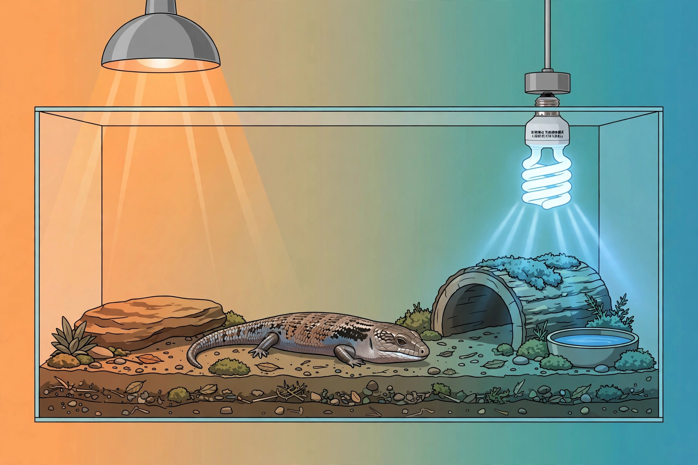
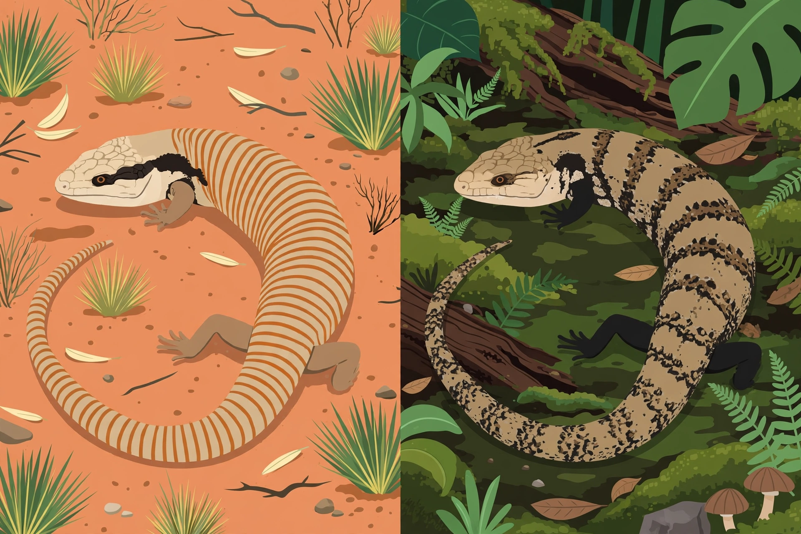

アオジタトカゲ 種類別飼育ガイド
アオジタトカゲ（Tiliqua属）の飼育方法を、種類ごとにまとめたガイドです。 数値はすべてセンチ・℃表記。海外ケアシートと国内情報を突き合わせ、情報が割れる項目は幅で書いています。
大前提
- 全種とも昼行性・地表性で、単独飼育が原則。同居はケンカ・咬み傷・指や尾の欠損につながるので不可。
- 寿命は15〜20年（35年超の記録も）。お迎えは長期戦。
- ケージや温度の基準は「昔の国内ガイド（小さめ・低め）」と「今の海外基準（大きめ）」で世代差があります。このガイドは新しい海外基準を主にしてあります。
図説1：ケージの中に「温度の勾配」を作る

左がバスキングライトで温める「ホットスポット」、右がシェルターと水入れのある「クールスポット」。 アオジタは自分で移動して体温を調整するので、ケージ全体を均一に温めるのではなく、温かい場所と涼しい場所の両方を用意するのが基本です。隠れ家は温側・冷側に1つずつ、冷側には湿度の高いウェットシェルターを置きます。
図説2：種類で一番違うのは「湿度」

左はオーストラリアの乾燥地帯の種類（絵はチュウオウ：太短い体に大きな頭、赤砂とスピニフェクス）、右はインドネシアの熱帯林の種類（絵はメラウケ：細長い体に長い尾、腹はサーモンオレンジ）。 同じアオジタでも体型からして全然違うし、必要な湿度は真逆に近いくらい違います。「アオジタ＝湿度40〜60%」という汎用の数字を全種に当てはめるのが一番の失敗のもとです。
湿度の3グループ：
| グループ | 種類 | 湿度の目安 |
|---|---|---|
| 乾燥系 | ニシ／チュウオウ | 20〜40% |
| 中間 | キタ／ヒガシ | 40〜60% |
| 中間（冷涼） | マダラ | 40〜50% |
| 多湿系 | ハルマヘラ／メラウケ／イリアンジャヤ／ケイ | 60〜80%（ハルマヘラは平均70〜80%＋夜間の上昇） |
種類別 早見表
| 種類 | 成体の全長 | ケージ（単独・推奨） | バスキング表面 | 湿度 |
|---|---|---|---|---|
| キタ | 45〜60cm | 150×75×60cm級 | 40〜46℃ | 40〜60% |
| ヒガシ | 40〜55cm | 150〜180cm幅 | 40〜46℃ | 40〜60% |
| ニシ | 40〜50cm | 120×60cm以上 | 35〜40℃ | 20〜40% |
| マダラ | 35〜50cm | 120×60×60cm以上 | 37〜40℃（低めに組む） | 40〜50% |
| チュウオウ | 38〜46cm | 120×60cm以上 | 35〜40℃ | 20〜40% |
| ハルマヘラ | 50〜60cm | 150〜180×60×60cm | 38〜41℃ | 70〜80%＋夜間上昇 |
| メラウケ | 60〜70cm | 150×60cm以上 | 38〜40℃ | 60〜80% |
| イリアンジャヤ | 46〜61cm | 150〜180×61×61cm | 38〜41℃ | 60〜80% |
| ケイ | 40〜51cm | 150×60cm級 | 38〜40℃ | 60〜80% |
| ピグミー | 15〜20cm | ―（ペット飼育不可） | ― | ― |
※ケージの最小ラインは全種共通で「幅120×奥行60cm」が現在の海外基準。高さより床面積が大事。
共通の基本
温度
- バスキングスポットの「表面温度」を放射温度計で測るのが基本（気温ではない）。
- 低温部は21〜29℃、夜間は18〜24℃が共通の目安（種類ごとの差は各節参照）。
- 温側・冷側の両方に隠れ家を置き、本人が選べるようにする。
UVB・ライト
- 全種でUVBは必須（または強く推奨）。T5 HO直管（ReptiSun 10.0／Arcadia 12%など）をケージ長の約半分に設置し、バスキング位置でUVI 3.0〜4.0が目標。
- 点灯は1日10〜12時間。管は約12か月で交換（光っていてもUVBは減衰する）。
- ライトの点灯時間は季節で調整すると自然に近い（夏は長く、冬は短く）。
床材
- 全種共通で「潜れる深さ10〜15cm」が基本。
- 向くもの：土砂ミックス（無添加の表土＋プレイサンド）、サイプレスマルチ、ヤシガラ（多湿系）。
- 不向きなもの：パイン／シーダー（芳香性の針葉樹）、カルシウムサンド。
- 種類ごとの向き不向きは各節に記載。
餌の考え方（属共通）
- 雑食。幼体（〜12か月）は動物性70〜80%、成体は動物性40〜60%・植物性40〜50%・果物10%以下が目安。
- 頻度：幼体は毎日、若齢（3〜8か月）は週3回、成体は週1〜2回。
- カルシウムは毎回〜大半の給餌でダスティング、マルチビタミンは週1回〜月1〜2回（UVB環境と製品表示による）。
- 肥満が全種共通で最大の飼育下リスク。 成体は週1〜2回で十分な個体も多い。
- NG食材：アボカド、ネギ類、ルバーブ。
健康チェック（飼い主の目安）
- 健康は「うんち」と「肌のはり・つや」で見る。
- 口を開けて舌を出していたら脱水の可能性。
- 普段の元気な姿を覚えておくと、元気がなくなった時にすぐ気付ける。
1. キタアオジタトカゲ Tiliqua scincoides intermedia
- 分布：オーストラリア北部（クイーンズランド州北部、ノーザンテリトリー、西オーストラリア州北部）。熱帯サバンナ、疎林、草原。
- 全長：45〜61cm。アオジタ最大級の亜種。
- ケージ：最小120×60×60cm、推奨150×75×60〜180×60×60cm（床面積1.1㎡以上）。
- 温度：バスキング表面40〜46℃（資料により35〜46℃）／低温部21〜27℃／夜間18〜24℃。
- 湿度：40〜60%。ウェットシェルターで局所的に60〜70%の場所を作る。
- UVB：必須。バスキング位置でUVI 3.0〜4.0。
- 床材：土砂ミックス、サイプレスマルチ、ヤシガラなど、深さ10〜15cm。
- 餌：属共通（幼体は動物性70〜80%、成体は動物性50〜60%）。
- 注意点：目の後ろの黒帯が薄い／ないのがヒガシとの見分けポイント。肥満と指先の脱皮不全に注意。掘る力が強いので蓋のロック必須。
- 性格：穏やかで好奇心旺盛。初心者向けの代表格で、CB個体はハンドリングにもよく慣れる。
2. ヒガシアオジタトカゲ Tiliqua scincoides scincoides
- 分布：オーストラリア東部〜南東部。温帯草原、硬葉樹林、海岸のヒース、郊外の庭にも出る。
- 全長：40〜55cm（最大61cmの記録あり）。キタよりやや小型・細身。
- ケージ：最小120×60×60cm、推奨150〜180cm幅。
- 温度：バスキング40〜46℃／低温部21〜29℃／夜間18〜24℃。
- 湿度：40〜60%。
- UVB：必須（UVI 3.0〜4.0）。
- 床材：土系10〜15cm、ヤシガラ、サイプレス。
- 餌：キタとほぼ共通。
- 注意点：目の後ろの太い黒帯が識別点（北東部の個体では不明瞭なことも）。キタとの交雑個体が出回ることがあるので、購入時は亜種の確認を。南部の個体群は冬にブルメーション（冬眠のように不活発になる期間）に入る。
- 性格：穏やかで人懐っこい。キタよりやや活発とも言われる。
3. ニシアオジタトカゲ Tiliqua occipitalis
- 分布：主に西オーストラリア州。草原、砂丘、低木地、スピニフェクスの林地。落ち葉や岩の下、ウサギの廃巣穴を隠れ家にする。
- 全長：40〜50cm（通常45cm前後）。
- ケージ：最小120×60cm（床面）、推奨122×61×61cm以上。※国内の古いガイドの「60cmクラス」は旧来の最低表記で、今の海外基準よりかなり小さい。
- 温度：バスキング表面35〜40℃（出典により32〜41℃）／低温部21〜29℃／夜間18〜24℃。極端な低温には弱く、冬は底面保温を勧める国内情報もあり。
- 湿度：20〜40%。属の中でも最も乾燥寄り。常時高湿は不向きで、脱皮用に少し湿らせたシェルターを1か所用意する型が推奨。
- UVB：必須扱い（UVI 3.0〜4.0）。
- 床材：潜れる緩い床材を10〜15cm。無添加表土60%＋プレイサンド40%の配合、乾燥系ミックス、バークチップなど。シダー・パインは全資料で回避。
- 餌：野生では昆虫・クモ・カタツムリ、ベリー類、死肉など。強い顎でカタツムリの殻を砕く。比率は属共通の成体目安（動物性50〜60%／植物性40〜50%）。
- 注意点：乾燥地帯の種。インドネシア系のような高湿運用を当てはめないこと。 流通は極めて稀で高価（オーストラリアは野生動物の輸出禁止のため、過去に欧米へ出た個体のCBのみ）。地域によっては保全対象。
- 性格：温和で臆病、慣れやすい。キタより臆病で、隠れ家と深い床材が必要。威嚇は口を開けて青い舌を見せ、体を平らにして大きく見せる「ハッタリ型」。
4. マダラアオジタトカゲ Tiliqua nigrolutea
黒い体に黄色〜オレンジの斑が入る種類。タスマニアにも分布する、冷涼な気候の出身。
- 分布：オーストラリア南東部とタスマニア。湿性・乾性硬葉樹林、山地林、海岸ヒース、草原。夜は落ち葉・岩・倒木の下。
- 全長：35〜50cm。体重1kgを超える個体もいる。
- ケージ：最小122×61×61cm、推奨120×60×60cm以上。高さより床面積。
- 温度：他のアオジタより低めに組むのが要点。 バスキング表面37〜40℃が属共通基準だが、マダラ専用資料ではホット側26〜28℃・クールエンド24℃と低めに出るものも。夜間18〜24℃で、通常の室温なら夜間加温が不要なことも多い。低温には非常に強い（短時間なら0℃近くに耐えた例も。ただし飼育で再現する値ではない）。
- 湿度：40〜50%。
- UVB：必要（UVI 3.0〜4.0）。
- 床材：表土＋プレイサンド混合、サイプレスマルチ、落ち葉、バークを10〜15cm。砂単体は目に入って感染症の恐れがあるので避ける。
- 餌：野生ではカタツムリ、甲虫などの遅い無脊椎動物、植物、花、果実。成体は動物性40〜60%／植物性40〜50%が目安。
- 注意点：冷涼気候型で、日本の夏の高温・高湿のほうがリスク。 他種より涼しい部屋管理が必要。高地型（大型で黒く、桃〜オレンジの斑が鮮やか）と低地型（小型で色が淡い）の2型がある。冬はブルメーションに入り早春に活動再開。カタツムリ駆除剤を食べたカタツムリ経由の中毒に注意。
- 性格：穏やかで動きが遅く、ハンドリング耐性は高い。脅威を感じると口を大きく開けて青い舌を見せ、シューッと鳴らして体を平たくする。
5. チュウオウアオジタトカゲ Tiliqua multifasciata（ホソオビアオジタトカゲ）
- 分布：オーストラリア中央部〜西部。赤砂の平原・砂丘・石の多い丘陵＋スピニフェクス植生。真の砂漠性種。
- 全長：38〜46cm。属内で最も太短く頭が大きく、「ツチノコ型」と紹介される体型。
- ケージ：種固有の基準は未確認のため属共通を適用。最小120×60cm、推奨122×61×61cm。
- 温度：種固有の数値表は未確認。乾燥系の共通値ではバスキング35〜40℃／低温部21〜29℃／夜間18〜24℃。
- 湿度：20〜40%（ニシと並ぶ最低湿度群）。脱皮用に局所的な高湿シェルターを用意。
- UVB：必要（条件はニシと共通）。
- 床材：乾燥系ミックス（表土60%＋プレイサンド40%）、赤砂＋土混合、バークチップを10〜15cm。常時湿った床材は過湿になりやすい。
- 餌：肉食性が強い機会的雑食。種特有の比率は未確認で、属共通の成体目安から動物性寄りに寄せると紹介されることが多い。
- 注意点：高湿度・蒸れが最大の失敗要因。 暑い時期は夜行性が強くなり、真夏に昼間の活動が鈍っても即異常とは限らない。流通は極めて稀で、日本国内の流通はほぼ皆無。
- 性格：データは少ないが、一般に臆病な砂漠種。導入初期は触らず落ち着かせる期間を取る。
6. オオアオジタトカゲ類 Tiliqua gigas（インドネシア系）
インドネシア〜ニューギニア産のグループ。共通するのは多湿が必須なことと、流通個体の大半が野生採集（WC）で、お迎え＝検疫の開始になることです。糞便検査、脱水の補正、他の個体との隔離が前提になります。
分類の整理：T. gigas には3亜種（基亜種 gigas、メラウケ evanescens、ケイ keyensis）。「ハルマヘラ」は独立した亜種ではなく、基亜種のハルマヘラ島ロカリティ／流通名です。「イリアンジャヤ」は未記載の Tiliqua sp. として扱うのが現在の主流です。
6-1. ハルマヘラ（T. g. gigas ハルマヘラ島ロカリティ）
- 分布：インドネシア・ハルマヘラ島（基亜種はマルク諸島〜ニューギニア島北部沿岸まで）。赤道直下の低地熱帯雨林の林床。
- 全長：50〜60cmを想定（45〜66cmの幅あり）。
- ケージ：最小120×60×60cm、推奨150〜180×60×60cm。前面開閉式・PVC製は保湿に有利。
- 温度：バスキング表面38〜41℃／低温部24〜29℃／夜間21〜25℃。
- 湿度：アオジタの中で最も高湿度を要求する群。 平均70〜80%を下回らず、霧吹き後や夜間に80〜100%まで上がる時間帯を毎日作る。60%未満が続くと脱皮不全がほぼ必発。測る場所は低温側の地表近く。ただし常時びしょ濡れ＋無換気は鱗腐れ・呼吸器疾患のもと。換気は確保する。
- UVB：必須。バスキング位置でUVI 3〜4。
- 床材：サイプレスマルチ、ヤシガラ、ココファイバー、表土ミックスを10〜15cm。国内情報でもヤシガラが第一推奨。アスペンは多湿でカビるので不向き。
- 餌：昆虫、卵、加熱した赤身肉・鶏肉、質の良いドッグフード少量＋葉野菜と野菜。成体は動物性40〜50%・野菜40〜50%・果物10%以下が落としどころ。
- 注意点：流通の大半がWC。輸入直後は脱水、内部寄生虫、ダニ、口内炎のチェックと糞便検査が必須。乾燥に最も弱く、指先・尾先の脱皮残り→指落ち、眼の感染が典型的な失敗パターン。腹部の黒白／黒ピンクのまだら模様がメラウケとの識別点。
- 性格：インドネシア系の中では神経質な方。WC個体は威嚇・咬むことも。入荷後最低2週間は触らず静置し、短いハンドリングから慣らす。
6-2. メラウケ Tiliqua gigas evanescens
- 分布：ニューギニア島南部低地（メラウケ周辺〜パプアニューギニア南部）。サバナ草原、季節性氾濫原、開けた林と熱帯林の移行帯。
- 全長：アオジタ属で最長。60〜70cmが飼育下の通常想定（尾が胴の80〜90%と極端に長い）。
- ケージ：最小120×60×60cmは下限。推奨150×60cm以上、できれば183×61×61cm。長い尾の取り回しに床面積が要る。
- 温度：バスキング表面38〜40℃／低温部24〜29℃／夜間21〜24℃を下回らない。
- 湿度：60〜80%で全資料一致。ハルマヘラほど常時80%超は要らないが、40〜50%台の乾燥飼育は脱皮不全・呼吸器トラブルの原因。
- UVB／床材／餌：ハルマヘラと共通。ただし成体は大型化するため、高脂肪の餌（ドッグフード、卵、マウス等）の頻度を上げると脂肪肝を伴う肥満になりやすい。成体は週1〜2回を基本に体型で調整。
- 注意点：インドネシア系ではCB個体が比較的流通するがWCも多い。識別点は、腹がサーモンオレンジで斑が少ない、四肢に細かい斑、体側バンドが細く明瞭、尾が最長。
- 性格：インドネシア系で最も穏やかとほぼ全資料が一致。CB個体はハンドリングに慣れやすく、インドネシア系の入門として選ばれることが多い。
6-3. イリアンジャヤ Tiliqua sp.（未記載種）
- 分類上の扱い（重要）：メラウケの学名（evanescens）に暫定的に置かれた経緯はありますが、現在の主要資料はそろって 未記載の Tiliqua sp. としています。メラウケと同種・同亜種として扱わないこと。「イリアンジャヤ」は産地名であり学名ではありません。繁殖ではロカリティを混ぜない。
- 分布：ニューギニア島南部〜西部沿岸の低地。飼育上は多湿系として扱う。
- 全長：46〜61cm。
- ケージ：最小120×60×60cm、推奨150〜180×61×61cm。
- 温度：バスキング表面38〜41℃（資料により33〜41℃と幅）／低温部21〜27℃／夜間21〜24℃。
- 湿度：60〜80%で全資料一致。朝夕2回の霧吹き、低温側の地表で測定。
- UVB：強く推奨（UVI 3.0〜4.0）。
- 床材：有機質に富む土壌＋落ち葉を10〜15cm。表土＋ソイル＋プレイサンドの混合に落ち葉・水苔の被覆など。
- 餌：gigas と同一基準（幼体は動物性70〜80%、成体は動物性50〜60%目安）。国内情報の「野菜：動物性＝7:3」は植物寄り配合の一例で、幅として動物性30〜60%／植物性40〜70%と理解する。
- 注意点：ほぼ常にWC。 寄生虫・脱水・マダニのチェック必須。同定が最も難しい群で、「他のどのタイプにも当てはまらなければイリアンジャヤ」という消去法同定がされるほど個体変異が大きく、販売ラベルの違いも非常に多い。
- 性格：WCが大半にもかかわらず「概して穏やかで好奇心旺盛」という評価。手から餌を食べるようになる個体も多い。
6-4. ケイアオジタトカゲ Tiliqua gigas keyensis
※学名の綴りは keyensis が正式。販売サイトで keiensis や evanescens と書かれる例がありますが誤りです。
- 分布：インドネシア・ケイ諸島（ケイ・クチル島、ケイ・ブサール島）。低地熱帯林、プランテーション、林縁の集落周辺。倒木や落ち葉の下に潜む。
- 全長：40〜51cm。gigas の中では小型の亜種（51cmを超える記録は未確認として扱う）。
- ケージ：ケイ専用の規格は未確認のため gigas 共通基準を適用。最小120×60×45〜60cm、推奨150〜180×61×61cm。小型だから90cmケージでよいという根拠は確認できなかった。
- 温度：ケイ固有の実測値は未確認。gigas 共通値でバスキング表面38〜40℃／低温部24〜29℃／夜間21〜24℃。
- 湿度：60〜80%（夜間に80〜100%へ上がる時間帯は通常）。
- UVB／床材／餌：gigas 共通（UVI 3〜4、潜れる床材10〜15cm、成体は動物性40〜50%・野菜40〜50%・果物10%以下）。
- 注意点：インドネシア系で最も流通量が少なく、情報も最も乏しい亜種。 大半がWC。金オリーブ〜オレンジ赤の地色に淡いバンド、全身（顔面まで）に細かい斑点／そばかす模様が特徴で、生後3〜6か月で斑点が出揃う。基亜種と混同されやすい。島嶼固有亜種のため生息地の攪乱に弱い。
- 性格：インドネシア系の中で攻撃性が高い方と複数の資料が一致（ただし「WC個体が多いことが原因の可能性」も併記されている）。ハンドリングは短時間・低頻度から。咬む力はアオジタ共通で強い。
7. ピグミーアオジタトカゲ Tiliqua adelaidensis（飼えない種類）
参考として載せますが、この種類はペットとして飼うことができません。
- オーストラリアではペットとしての保有・売買自体が認められておらず、飼育下個体は保全繁殖施設など研究・保全目的に限られます。合法的な商業流通はゼロで、海外市場に出る個体は密輸由来とみなされています。
- 南オーストラリア州の温帯草原だけに分布する、アオジタ属最小の種（全長15〜20cmほど）。絶滅危惧種（IUCN：Endangered）で、野生個体数は約5,000頭と推定。
- 1959年以降記録がなく絶滅したと考えられていましたが、1992年にヘビの胃の内容物から再発見されたという経緯があります。
- 自分で穴を掘らず、クモが掘った放棄巣穴（ほぼ垂直・深さ約24cm）を住居にします。名前と違い、舌は青くなくローズピンク色です。
「種類ごとに調べる」と必ず出てくる名前なので載せましたが、お迎えの候補には入りません。
飼い主の実践メモ（板橋さんの運用）
一般論ではなく、実際に飼っている運用の記録です。
- ライト管理：ライトはSwitchBotで管理し、点灯時間は季節で調整（夏は長く、冬は短く）。
- 給餌：ウェットタイプのドッグフード300gに鶏卵を1個混ぜて与える。卵だけを単体であげることはほぼない。
- 湿度スポット：ペットシーツを少し濡らすと、ジメジメした場所（湿度の高いスポット）を簡単に作れる。全体をジメジメにするのはNGで、「ずっと湿った場所がある場所」と「乾いた場所」の両方があるのが大事。
- インドネシア系の湿度：運用の指定は70〜90%（主要ケアシートの平均値60〜80%より上限側の運用）。
- お迎えの前に考える順番：「スペース、生体の値段、ご飯」。まず必要なのはお金。そして「生き物を飼いたいと思ったら、まずその生き物が住んでる地域の温度を調べる」。
- 種類選び：おすすめはケイアオジタ。「イベントで目が合ったら運命かもしれない」。
参考ソース
- ReptiFiles ケアガイド／種別ケアシート（温度・湿度・ライト／餌）
- RSPCA Knowledgebase、Smithsonian's National Zoo、The Bio Dude、Reptile Centre、PetMD、Exotic Pet Vet
- Australian Museum（マダラ）、Museums Victoria（ニシ／マダラ）、Wikipedia（各種）
- IUCN Red List（ピグミー／T. gigas）、CITES CoP19提案書（ピグミー）、DCCEEW（ピグミー）
- BlueTongueSkinks.NET（ケイ）、Exotics Keeper（インドネシア系）、BeWild Reptile Rescue（インドネシア系）
- All About 爬虫類ガイド（ニシ／チュウオウ／キタ・ヒガシ系）、ブリちょく（オオアオジタ／イリアンジャヤ）
※数値は2026-11-22時点の調査。資料間で数値が割れる項目は幅で記載し、確認できなかった項目は「未確認」と明記してあります。